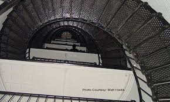

This spanish watchtower was built in the late 1500's to aid navigation in North America. It was rebuilt several times due to storms and shoreline erosion. Ghost hunters first visited this site in 2005 where it was named "the Mone Lisa of paranormal sites". They gathered the most evidence at this location of paranormal activity than anywhere else in the town. Tours are now given of this location due to its historical significance and haunted features. The most known story of the lighthouse is the tragedy of Hezekiah H. Pittee, superintendent of lighthouse construction from 1871-1874. The children were playing on a supply cart during the construction when the cart ran on the tracks. When the cart hit the gate the childrn were trapped until a worker was able to free them. The two youngest children survived but the two older children did not.
An English major at the University of North Florida who works giving tours at the location with glow sticks as the only light during the tour, says he has experienced things like having his ankle grabbed and having arm hairs plucked off. He has also seen things like shadowy figures in the tower, hands reaching through the tower door, and furniture moving around by itself.
Image of a ghost sitting at the lighthouse
Facts
The lighthouse rises 165 feet above sea level and contains 219 steps climbed by visitors

Image of the 219 spiral stairs that visitors choose to climb.
The lighthouse is St Augustine's oldest surviving brick structure
It is still a working lighthouse today
Haunted Lighthouse Reviews
"Spookiest haunted place I've ever been to! I even got a great history lesson along the way."
"I would recommend for any and all ages looking for a haunted experience expecially around halloween. During our tour, the guide had his ankle grabbed by some sort of spirit and fell! It was really scary but an awesome opportunity to experience the supernatural first hand."
"Favorite haunted place ever! If anyone is ever in St. Augustine Florida and finds themself with some free time, I 100% recommend the lighthouse. I was on edge throughout the enire tour and the guide was extremely knowledgable about the history of the lighthouse and all the ghost stories. We spent about an hour and a half and I enjoyed every minute of it."
"SUPER COOL!"
The famous haunted lighthouse in St. Augustine, Florida.